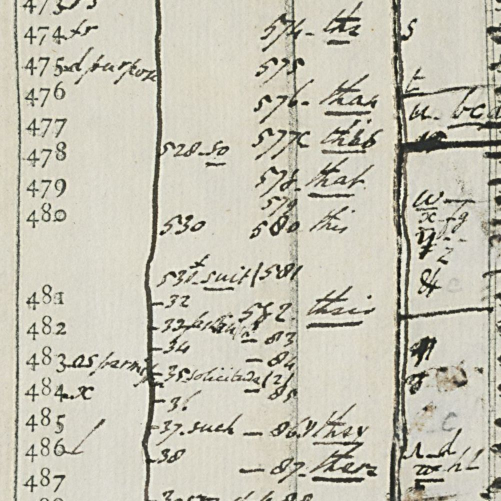

At a glanceExternal key matched · partial (93% of the cipher)
- The letter
- Robert Reade, nephew and secretary of Sir Francis Windebank, to Windebank, Paris, 19 April 1641. Windebank was Charles I’s Secretary of State and had fled to Paris in December 1640. Partly in cipher.
- Where
- DECODE R7766, catalogued with writer and recipient unknown; signed “R. Reade” and endorsed “my Cousin Reade from Paris”.
- The cipher
- Letters at 1–100 with the odd numbers below 50 as nulls, symbol letters, and an alphabetical code up to about 735.
- How it was read
- BL Add MS 32256 holds a key sheet for the same cipher, “Windebank to his Son. Paris. March 1642” (DECODE R9115). Of 215 significant groups, 193 are deciphered from its values and 8 from values rebuilt here.
- What it says
- The clear text concerns Strafford’s trial, the King’s papers and Walter Montagu’s arrival; the cipher carries household business, including that Sir William St Ravy has done Mr Forster no good offices in Paris.
- Still open
- 14 code groups the reconstruction leaves blank, offered as conjectures (7%).
01 The letter

The letter covers three pages (ff. 148r, 148v, 149r). The address leaf f. 149v carries the endorsement and “Given by Mr G. Holmes”. It answers the recipient’s letter of 1 April and follows Reade’s own letter of the 16th. The clear text covers:
- a malicious report that Reade had said, to two French gentlemen in a garden, that the Lords of the Parliament are fools. He denies it at length and asks the recipient to raise it with the Lord Chief Justice;
- the roads full of soldiers, which keep the household in its quarter of Paris for another month;
- “My Lo: Lieutenant”, Strafford, then on trial, “fallen into the hands of noblemen and persons of honor”;
- the King’s box of papers and a copy held by Mr Treasurer;
- the Queen’s business;
- Mr Montagu’s arrival, “very civilly” received;
- Sir William St Ravy leaving for England;
- a defence of Mr Forster, lodged with the household.
The cipher begins where the letter turns to Windebank himself: “It is to be seriously considered what is to be done”.
02 The key

DECODE R9115 is a two-page working sheet. The Deciphering Branch printed a blank grid of numbers and filled in the values as they were recovered. The first page is headed “Windebank to his Son. Paris. March 1642”, the second “Windebank’s C[ipher] continued 1640”. The cipher has four parts:
- 1–50: single letters. Every odd number is marked + (a null). The even numbers are letters: 2 c, 4 f, 6 n, 8 h, 10 r, 12 t, 14 a, 16 g, 18 p, 20 b, 22 u, 24 o, 26 l, 28 e, 32 k, 34 m, 36 i, 40 s, 42 x, 44 d.
- 51–100: more letters and syllables: 51 r, 53 c, 54 l, 55 s, 56 a, 57 d, 58 m, 59 t, 60 e, 62 n, 64 i, 66 p, 68 o, 69 h, 72 u, 73 and, 74 am, 75 as, 93 again, 97 an.
- Symbol letters: m n, E o, ω m, Ǝ r, ⊔ i, + l, φ s, Δ t, * y, ⊕ a, π c, ɔ d, ∪ e, C p, and others.
- A code in alphabetical order from 100 to about 735: 128 be, 183 can, 202 do, 276 from, 323 him, 335 his, 362 King, 457 Parliament, 533 shall, 572 to, 574 the, 578 that, 636 will, 732 England, 735 France.
Reade’s letter uses the same cipher. The most frequent code groups in it are the reconstruction’s the, to and that, and its symbol letters are the key’s. Several characters first transcribed as digits are the key’s symbol letters: φ looks like an 8, ɔ like a 2, and the looped n-sign like a D.
03 The decipherment
Plain type is deciphered from the key. Words in italics come from values rebuilt here. Words in [brackets] are conjectures for groups the key leaves blank (section 04). Nulls are dropped.
Passage A (f. 148v foot to f. 149r), after the clear “It is to be seriously considered what is to be done”:
in case a proclamation shall goe out against my [455: patron?] as against the last [673], for as to the one side, I am of opinion they have not enough against him to confiscate his fortune, and they would be [willing] to take the advantage of his refusall to return upon the a summons. So on the other side, I do not find how his person can be strong if he shall return. The only [way] i[s] [conceived] to be that [His Majesty] will please to prevent that cause, if they purpose to take it, bu[t pres]sing that [Mr Forster] [should] give in his [90]; but God knows why that will suit.
Passage B (f. 149r), after the clear “Sir William St Ravy (as I hear) parts this day for England, but I do but hear it from others, for he comes not at us”:
I am [informed] he has done [Mr Forster] no good [offices] here, and that he will not do him the best in Court; they have an eye [over] him.
The clear text goes straight on: “It may be that Mr Forster may have ill offices done him in England…”. This confirms the sense of the passage and supports the conjecture that 718 is Forster.
04 What remains uncertain
The passages have 254 groups, 215 of them after the nulls are dropped. Grades follow the README conventions: H a value on the key, C a rebuilt value with firm context, M a conjecture.
- Re-measured 5 October 2026. Key and rebuilt values together decipher 201 of 215 cipher groups (93.5%). The margin entry for 650 on the key sheet (R9115 f. 1) was read at full resolution: it is 650. w[r]it with an h above, not way, and none of the candidates fits the context, so 650 stays grade M. Neither key page has side notes for the other twelve open values. The fourteen single-occurrence blanks need key material: the Reade letters in TNA SP 16 (physical access).
- H, 193 groups (89.8%): deciphered from values on the key, including 203 done and 729 “ct.” (Court), which are side notes on the sheet. 562 is “strong” on the key, in the period sense of safe or secure (“how his person can be strong if he shall return”). Until 30 September 2026 this page printed a rebuilt “secure” there instead.
- C, 8 groups (3.7%): values rebuilt from the code’s alphabetical slot and the context. They are 100 advantage, 275 find, 437 one, 524 return (twice) and 573 they/the (three times). 573 fits “they” in two places. In “upon 573 a summons” “the” fits better, and there the 14 (a) is probably a slip. The key sheet has a partly legible entry at 573, “u. th…”: the word begins th, and the rest runs under a ruled line. It fits they or the but is too damaged to confirm either.
- M, 14 groups (6.5%): blank on the reconstruction and conjectured.
- 650 way, 160 conceived, 319 His Majesty, 539 should.
- 718 Forster (twice), 359 informed 444 offices, 452 over.
- 660, “they would be [willing] to take the advantage”: willing, glad or ready fit the sense. On the key 660 is blank among the y-words (652 you, 662 you, 664 your, 666 yet), where a w-word would not stand, and no y-word gives the sense.
- 487 (inside “bu…ing”), 90 (his answer or account), 455 (my patron?) and 673 (the last Lord Keeper? Finch fled in December 1640 as Windebank did).
Only a fuller copy of the key would settle these. No other Windebank key is on DECODE, and no Windebank letter in this cipher was found there.
05 Method
- The images were fetched from DECODE and the two passages transcribed. The signature and endorsement gave the writer.
- The key of “Mr Browne” (R8694, Add MS 72438) was tried first and failed. Its code stops at 371, and its alphabet gives nothing.
- A search of the DECODE record list for Windebank found R9115 in Add MS 32256. Both of its pages were transcribed at full resolution and entered as a table.
- The table was applied to the passages, the doubtful glyphs were checked again against the key’s symbol list, and the result was measured.
No printed edition or calendar of the letter was found. Harleian letters of this kind are outside the Calendars of State Papers Domestic.
Full texts
The transcription and the decryption of every document on this page, so that the reading can be used and checked. Short files are shown here; all are in the repository.
R7766, Robert Reade to his cousin, Paris, 19 Apr 1641 (Harley MS 7001 ff. 148-149) read in part
Robert Reade, nephew and secretary of Secretary Sir Francis Windebank, who followed him into exile in Paris, writes to a cousin at court, probably Thomas Windebank. The first cipher passage weighs what to do if a proclamation goes out against Windebank: they have not enough against him to confiscate his fortune, his person would not be safe if he returned, and only His Majesty can prevent it; the second says Sir William St Ravy has done Mr Forster no good offices. Read with the Windebank cipher reconstruction DECODE R9115; 14 tokens are conjectures.
Builds coherent sentences, but under the read bar of 95% of words read as sense (90% here); the holes are marked in the reading.
Transcription
# Harley MS 7001 ff.148-149 (DECODE R7766), Robert Reade, Paris, 19 Apr 1641. Transcribed from DECODE images. # Passage A: f.148v foot to f.149r (after "It is to be seriously considered what is to be done") # Symbols: X=circle-cross(a) U=square-cup(i) P=pi(c) u=small cup(e) D=looped n-sign(n) W=omega(m) S=phi(s) T=delta(t) O=reversed-c(d); c=C(p) 3=(r) e=E(o) in line 2 A: 23 343 153 13 14 A: 33 c 3 e 2 26 56 34 X 12 36 68 62 533 16 24 28 25 451 93 S T 47 A: 386 455 75 15 14 16 56 U 6 40 12 17 574 366 673 272 75 25 24 A: 43 574 437 55 64 44 u 43 64 74 435 68 66 36 62 U 24 D 45 A: 586 318 416 29 28 62 68 22 65 69 37 93 40 59 27 323 572 A: 53 68 6 4 U S P X 12 28 11 335 260 73 573 642 128 660 572 A: 600 574 100 435 335 31 51 28 61 72 55 56 + 26 13 572 524 612 A: 573 7 14 19 29 55 72 W 34 24 6 40 41 528 33 24 62 574 438 A: S U O u 45 36 202 416 275 331 335 467 183 128 562 345 324 A: 533 524 574 441 650 23 U 29 160 572 128 578 319 636 464 572 A: 31 18 10 60 22 60 D 59 47 578 182 345 586 475 572 600 346 A: 20 72 21 487 36 6 16 17 578 718 539 301 343 335 90 37 131 A: G 68 O 39 361 40 43 645 578 636 531 # Passage B: f.149r after "for he comes not at us." B: 19 29 36 74 359 324 325 203 718 422 299 444 314 73 578 324 B: 636 416 202 323 574 142 343 729 573 318 97 47 u * 60 39 45 B: 452 323 35 15
Transcription
23 343 153 13 14 33 c 3 e 2 26 56 34 X 12 36 68 62 533 16 24 28 25 451 93 S T 47 386 455 75 15 14 16 56 U 6 40 12 17 574 366 673 272 75 25 24 43 574 437 55 64 44 u 43 64 74 435 68 66 36 62 U 24 D 45 586 318 416 29 28 62 68 22 65 69 37 93 40 59 27 323 572 53 68 6 4 U S P X 12 28 11 335 260 73 573 642 128 660 572 600 574 100 435 335 31 51 28 61 72 55 56 + 26 13 572 524 612 573 7 14 19 29 55 72 W 34 24 6 40 41 528 33 24 62 574 438 S U O u 45 36 202 416 275 331 335 467 183 128 562 345 324 533 524 574 441 650 23 U 29 160 572 128 578 319 636 464 572 31 18 10 60 22 60 D 59 47 578 182 345 586 475 572 600 346 20 72 21 487 36 6 16 17 578 718 539 301 343 335 90 37 131 G 68 O 39 361 40 43 645 578 636 531 19 29 36 74 359 324 325 203 718 422 299 444 314 73 578 324 636 416 202 323 574 142 343 729 573 318 97 47 u * 60 39 45 452 323 35 15
Decryption
Robert Reade (Paris) to [his cousin, probably Thomas Windebank], 19 April 1641. BL Harley MS 7001 ff. 148-149 (DECODE R7766).
Cipher passages read with the Windebank cipher reconstruction on BL Add MS 32256 f. 4 (DECODE R9115); decoder targets/harley7001/key.py over ct.txt.
Plain = read from the key. {braces} = conjecture from context and the code's alphabetical slot (not in the reconstruction). [n] = unread.
Spelling (v6, 23 Oct 2026): as the cipher spells it, letter by letter (goe, refusall, preuent; the 23 Oct check of
the decode found 'prevent' the only word the earlier light modernisation had changed); code groups are given by the
key's word, whose spelling the cipher does not carry. Nulls (odd numbers 1-49) dropped.
Passage A (f. 148v foot - f. 149r top), after the clear "It is to be seriously considered what is to be done":
in case a proclamation shall goe out against my {patron? 455} as against the last {673: Lord Keeper?}.
For as to the one side, I am of opinion they have not enough against him to confiscate his fortune,
and they would be {willing? 660} to take the advantage of his refusall to return upon the(ir) summons.
So on the other side, I do not find how his person can be strong (i.e. safe) if he shall return. The only {way} i[s]
{conceived} to be that {His Majesty} will please to preuent that cause if they purpose to take it,
bu[t {pres}]sing that {Mr Forster} {should} give in his [90 account/answer?]; but God knows why that will suit.
Passage B (f. 149r), after the clear "Sir William St Ravy (as I hear) parts this day for England, but I do but hear it from others, for he comes not at us.":
I am {informed} he has done {Mr Forster} no good {offices} here, and that he will not do him the best in
Court; they have an eye {over} him.
(The clear text goes on: "It may be that Mr Forster may have ill offices done him in England ...")
Measured (key.py, re-measured 30 Sept 2026): 254 tokens, 215 after nulls. 193 (89.8%) read from values on the key; 8 (3.7%) from values rebuilt here by alphabetical slot and firm context (100 advantage, 275 find, 437 one, 524 return x2, 573 they/the x3); 14 (6.5%) conjectured. 203 done and 729 'ct.' (Court) are side notes on the key sheet; 562 is 'strong' on the key (period sense: safe, secure).
Conjectured groups: 90, 160, 319, 359, 444, 452, 455, 487, 539, 650, 660, 673, 718 (x2). 660 is blank on the key among the y-words (652 you, 662 you, 664 your, 666 yet); 'willing' (or glad, ready) is from context only.
(Until 30 Sept 2026 this read 562 'secure' as a rebuilt value, although the key has 'strong', and counted 660 'willing' as rebuilt and 573 four times; it has three occurrences.)Reading
# R7766, Robert Reade to his cousin [probably Thomas Windebank], Paris, 19 Apr 1641 (BL Harley MS 7001 ff. 148-149): reading
Written 23 Oct 2026 (Claude Opus 5.5, translation wave v9) from `reading.txt`, wording unchanged: the two cipher
passages, read with the Windebank cipher reconstruction (BL Add MS 32256 f. 4, DECODE R9115; decoder `key.py` over
`ct.txt`), as running text, with the clear sentences that lead into them (in *italics*, as quoted in `reading.txt`;
the rest of the clear letter is not transcribed in the repository). The letter is in English: no translation is
needed. Spelling as the cipher spells it (goe, refusall, preuent); code groups are given by the key's word.
Holes: `reading.txt`'s {conjectures} are written `[?word]` (a word the key does not give, chosen by the code's
alphabetical slot and context); `[90]` an unread group; letters supplied inside a word in [ ]; (ir) and the gloss
"(i.e. safe)" are `reading.txt`'s.
## Reading
*It is to be seriously considered what is to be done* in case a proclamation shall goe out against my [?patron] as
against the last [?Lord Keeper]. For as to the one side, I am of opinion they have not enough against him to
confiscate his fortune, and they would be [?willing] to take the advantage of his refusall to return upon the(ir)
summons. So on the other side, I do not find how his person can be strong (i.e. safe) if he shall return. The only
[?way] i[s] [?conceived] to be that [?His Majesty] will please to preuent that cause if they purpose to take it,
bu[t] [?pressing] that [?Mr Forster] [?should] give in his [90]; but God knows why that will suit.
*Sir William St Ravy (as I hear) parts this day for England, but I do but hear it from others, for he comes not at
us.* I am [?informed] he has done [?Mr Forster] no good [?offices] here, and that he will not do him the best in
Court; they have an eye [?over] him. *It may be that Mr Forster may have ill offices done him in England …*Key: key.py
06 Sources
- British Library, Harley MS 7001 ff. 148–149: DECODE R7766 (images, login).
- British Library, Add MS 32256 f. 4 and its continuation page, the Windebank cipher reconstruction: DECODE R9115.
- British Library, Add MS 72438 ff. 70–71, key of “Mr Browne”: DECODE R8694 (does not fit).
Transcription, key table, decoder and notes: targets/harley7001/ in the repository.